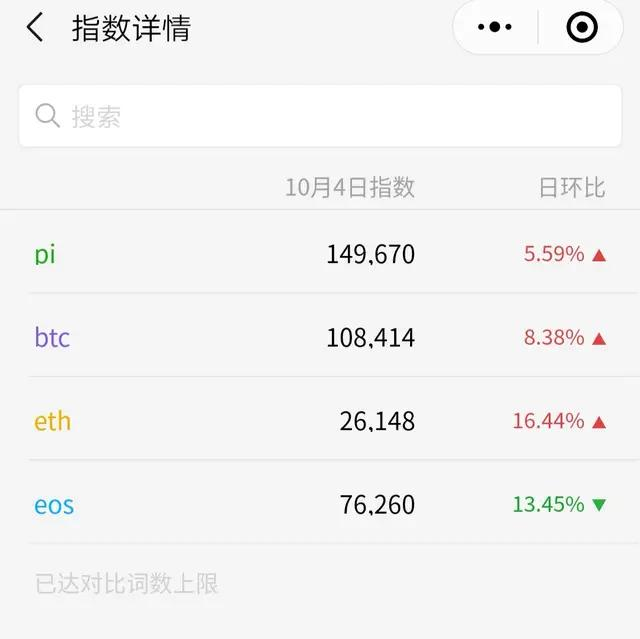
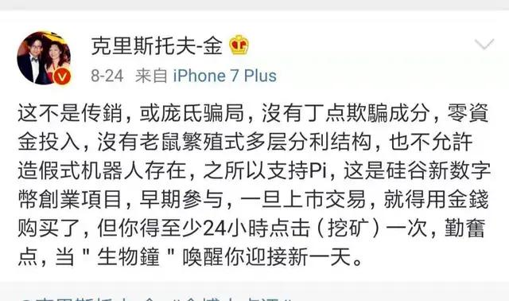

就在昨天Pi的微信活跃指数全面超过了比特币，超越了所有虚拟币的活跃度，这一数据，比特币用了10年，就被刚上线几个月的Pi超越了，不得不说Pi的影响力惊人！

Pi是由三名来自美国斯坦福大学的年青教授创立的，昨天宣布pi的真实活跃用户超过55万，下个月会到100万，到100万时挖矿产量会减半，随着挖矿人数增加，挖矿数量等比例减少，当人数达到一千万，挖矿产量降为零，跟比特币一样，具有稀缺性，价值也会越来越高，趁现在没减半，赶紧加入挖pi。

去年火爆的趣步老玩家表示，“Pi以后会更牛！”相信斯坦福大学有实力。 百万博主也参与挖矿，并表示这不是传销，没有半点欺骗，零投资，大家可以放心玩。 挖矿简单，只有手机就能挖矿，人人都能参与，是第一个落地项目。还在等什么，赶快下载挖矿！
上一篇：Pi币明年将开启个人分布式节点